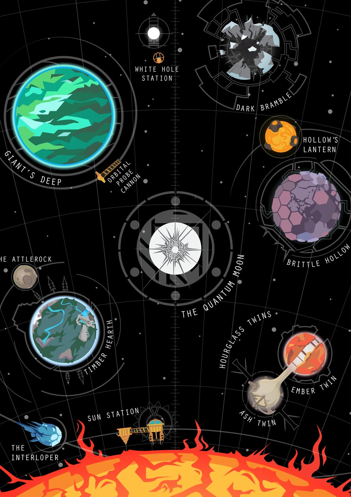

Sistema Solar

O cenário é um sistema solar bem pequeno, com planetas e luas diferentes entre si.
Sua jornada começa no Recanto Lenhoso (Timber Hearth), o lar do seu povo.
É uma vila acolhedora, com floresta, fogueira e base de lançamento.
Os demais destinos você conhece durante a viagem.
Nomes que aparecem no mapa
- Recanto Lenhoso (Timber Hearth)
- Pedra da Lia (Attlerock)
- Profundezas do Gigante (Giant’s Deep)
- Vale Incerto (Brittle Hollow)
- Lanterna do Vale (Hollow’s Lantern)
- Gêmeo Cálido e Gêmeo Cinzento (Ember Twin e Ash Twin)
- Abrolho Sombrio (Dark Bramble)
- O Xereta (The Interloper)
- Lua Quântica (Quantum Moon)